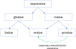

Semantyka przenoszenia#
Motywacje dla semantyki przenoszenia#
Optymalizacja wydajności:
unikanie zbędnego kopiowania obiektów tymczasowych (temporary objects)
możliwość wskazania, że obiekt nie będzie dalej używany - jego czas życia wygasa (expiring object)
Implementacja obiektów, które kontrolują zasoby systemowe (np. pamięć, uchwyty do plików, muteksy, itp.). Takie obiektu, nie powinny być kopiowane, ale powinny umożliwiać transfer prawa własności do zasobu:
auto_ptr<T>w C++98 symulował semantykę przenoszenia za pomocą konstruktora kopiującego i operatora przypisania
Przykład (potencjalnie) nieefektywnego kodu w C++98:
void create_and_insert(std::vector<string>& coll)
{
std::string str = "text";
coll.push_back(str); // insert a copy of str
// str is used later
coll.push_back(str + str); // insert a copy of temporary value
// unnecessary copy in C++98
coll.push_back("text"); // insert a copy of temporary value
// unnecessary copy in C++98
coll.push_back(str); // insert a copy of str
// unnecessary copy in C++98
// str is no longer used
}
lvalue i rvalue#
Aby umożliwić implementację semantyki przenoszenia C++11 wykorzystuje podział obiektów na:
lvalue
obiekt posiada nazwę lub jest referencją
&można pobrać adres obiektu
rvalue
nie można pobrać adresu
zwykle nienazwany obiekt tymczasowy (np. obiekt zwrócony z funkcji przez wartość)
z obiektów rvalue możemy transferować stan pozostawiając je w poprawnym, ale nieokreślonym stanie
Przykłady:
double dx;
double* ptr; // dx and ptr are lvalues
std::string foo(std::string str); // foo and str are lvalues
// foo's return is rvalue
foo("Hello"); // temp string created for call is rvalue
std::vector<int> vec; // vec is lvalue
vec[5] = 0; // vec[5] is lvalue
Operacja przenoszenia, która wiąże się ze zmianą stanu, jest niebezpieczna dla obiektów lvalue, ponieważ obiekt może zostać użyty po wykonaniu takiej operacji.
Operacje przenoszenia są bezpieczne dla obiektów rvalue. Takie obiekty są tymczasowe i nie będą używane po wykonaniu operacji przenoszenia.
Referencje rvalue - rvalue references#
C++11 wprowadza referencje do rvalue - rvalue references, które zachowują się podobnie jak klasyczne referencje z C++98 (zwane w C++11 lvalue references).
składnia:
T&&muszą zostać zainicjowane i nie mogą zmienić odniesienia
służą do identyfikacji operacji, które implementują przenoszenie
Reguły wiązania referencji#
Wprowadzenie referencji do rvalue rozszerza reguły wiązania referencji:
Tak jak w C++98:
lvalues mogą być wiązane do lvalue references
rvalues mogą być wiązanie do const lvalue references
W C++11:
rvalues mogą być wiązane do rvalue references
lvalues nie mogą być wiązane do rvalue references
std::string full_name(const std::string& first, const std::string& last)
{
return first + " " + last;
}
std::string fname = "John"; // fname is lvalue
std::string& ref_fname = fname; // lvalue reference is bound to an lvalue
const std::string& cref_full_name = full_name(fname, "Doe"); // const lvalue reference is bound to an rvalue
std::string&& rref_full_name = full_name("John", "Doe"); // rvalue reference is bound to an rvalue
std::string&& rref_fname = fname; // ERROR - rvalue reference cannot be bound to an lvalue
Important
Teoretycznie możliwe jest tworzenie referencji typu const T&&. Są one poprawne składniowo, ale nie mają sensu.
Implementacja semantyki przenoszenia#
Przeciążanie funkcji za pomocą referencji rvalue#
Przy pomocy lvalue referencji i rvalue referencji możemy przeciążać funkcje. W ten sposób możemy zaimplementować funkcje, które przyjmują obiekty tymczasowe (rvalue) i obiekty, które będą dalej używane (lvalue).
template <typename T>
class vector
{
public:
void push_back(const T& item); // accepts lvalue - inserts a copy of item into a vector
void push_back(T&& item); // accepts rvalue - moves item into container
};
// ...
void create_and_insert(vector<string>& coll)
{
string str = "text";
coll.push_back(str); // coll.push_back(const string&) - inserts a copy of str (lvalue)
// str is used later
coll.push_back(str + str); // coll.push_back(string&&) - moves temporary object into container
coll.push_back("text"); //coll.push_back(string&&) - moves temporary object into container
coll.push_back(std::move(str)); // coll.push_back(string&&) - moves expiring str into container
// str is no longer used
}
Implementacja semantyki przenoszenia w klasach#
Aby zaimplementować semantykę przenoszenia dla klasy należy zapewnić jej:
konstruktor przenoszący - przyjmujący jako argument rvalue reference
przenoszący operator przypisania - przyjmujący jako argument rvalue reference
Important
Konstruktor przenoszący i przenoszący operator przypisania są nowymi specjalnymi funkcjami składowymi klas w C++11.
Funkcje specjalne klas w C++11#
Od C++11 istnieje sześć specjalnych funkcji składowych klasy:
konstruktor domyślny -
X();destruktor -
~X();konstruktor kopiujący -
X(const X&);kopiujący operator przypisania -
X& operator=(const X&);konstruktor przenoszący -
X(X&&);przenoszący operator przypisania -
X& operator=(X&&);
Important
Klasa wspiera semantykę przenoszenia, jeśli posiada konstruktor przenoszący i przenoszący operator przypisania.
Implementacja konstruktora przenoszącego#
Implementacja konstruktora przenoszącego powinna przenieść zasoby obiektu tymczasowego do obiektu docelowego i pozostawić obiekt tymczasowy w poprawnym, ale nieokreślonym stanie.
Implementując przenoszący operator przypisania należy najpierw zwolnić zasoby obiektu docelowego, a następnie przenieść zasoby obiektu źródłowego do obiektu docelowego.
class DataSet
{
private:
std::string name_;
int* data_;
size_t size_;
public:
DataSet(std::string name, std::initializer_list<int> data)
: name_(std::move(name)), data_(new int[data.size()]), size_(data.size())
{
std::copy(data.begin(), data.end(), data_);
}
~DataSet()
{
delete[] data_;
}
// move constructor
DataSet(DataSet&& source)
: name_(std::move(source.name_)) // move string using its move constructor
, data_(source.data_) // copy pointer from source.data_ to data_
, size_(source.size_) // copy size from source.size_ to size_
{
source.data_ = nullptr; // set source.data_ to nullptr - no longer owns the resource
source.size_ = 0;
}
// move assignment operator
DataSet& operator=(DataSet&& source)
{
if (this != &source)
{
delete[] data_; // release the resource
name_ = std::move(source.name_); // move string using its move assignment operator
data_ = source.data_; // copy pointer from source.data_ to data_
size_ = source.size_; // copy size from source.size_ to size_
source.data_ = nullptr; // set source.data_ to nullptr - no longer owns the resource
source.size_ = 0;
}
return *this;
}
//... rest of the class
};
Implementacja z std::exchange()#
Przy samodzielnej implementacji konstruktora przenoszącego i przenoszącego operatora przypisania można skorzystać z funkcji std::exchange() z biblioteki standardowej C++.
#include <utility>
class DataSet
{
DataSet(DataSet&& source)
: name_(std::std::move(source.name_));
, data_(std::exchange(source.data_, nullptr)) // move pointer from source.data_ to data_ and set source.data_ to nullptr
, size_(std::exchange(source.size_, 0)) // move size from source.size_ to size_ and set source.size_ to 0
{
}
DataSet& operator=(DataSet&& source)
{
if (this != &source)
{
delete[] data_; // release the resource
name_ = std::move(source.name_); // move string using its move assignment operator
data_ = std::exchange(source.data_, nullptr); // move pointer from source.data_ to data_ and set source.data_ to nullptr
size_ = std::exchange(source.size_, 0); // move size from source.size_ to size_ and set source.size_ to 0
}
return *this;
}
};
Domyślne implementacje konstruktora przenoszącego i przenoszącego operatora przypisania#
Kompilator jest w stanie wygenerować domyślne implementacje konstruktora przenoszącego i przenoszącego operatora przypisania, jeśli klasa nie posiada własnych implementacji.
Important
Domyślny konstruktor przenoszący przenosi każdą składową klasy.
Domyślny przenoszący operator przypisania deleguje semantykę przenoszenia do każdej składowej klasy
Konceptualny kod domyślnego konstruktora przenoszącego i przenoszącego operatora przypisania wygląda następująco:
class X : public Base
{
Member m_;
X(X&& x) : Base(static_cast<Base&&>(x)), m_(static_cast<Member&&>(x.m_))
{}
X& operator=(X&& x)
{
Base::operator=(static_cast<Base&&>(x));
m_ = static_cast<X&&>(x.m_);
return *this;
}
};
Domyślne implementacje konstruktora przenoszącego i przenoszącego operatora przypisania są generowane, jeśli:
użytkownik nie zadeklarował destruktora, konstruktora kopiującego, kopiującego operatora przypisania, konstruktora przenoszącego i przenoszącego operatora przypisania
class DataSet { std::string name_; std::vector<int> data_; public: DataSet(std::string name, std::initializer_list<int> data) : name_(std::move(name)), data_(data) {} // move constructor & move assignment operator are generated by the compiler // copy constructor & copy assignment operator are generated by the compiler };
użytkownik zadeklarował konstruktor przenoszący lub przenoszący operator przypisania jako
=defaultclass DataSet { std::string name_; std::vector<int> data_; public: DataSet(std::string name, std::initializer_list<int> data) : name_(std::move(name)), data_(data) {} DataSet(DataSet&&) = default; // user declared but with default implementation DataSet& operator=(DataSet&&) = default; // user declared but with default implementation // copy constructor & copy assignment are implicitly deleted };
Reguła “Rule of Five”#
Jeśli w klasie jest konieczna implementacja jednej z poniższych specjalnych funkcji składowych:
konstruktora kopiującego
konstruktora przenoszącego
kopiującego operatora przypisania
przenoszącego operatora przypisania
destruktora
najprawdopodobniej należy zaimplementować wszystkie.
Ta regułą stosuje się również do funkcji specjalnych zadeklarowanych jako default.
Klasa:
struct Gadget // default copy and move semantics enabled
{
std::string name;
};
nie jest równoważna klasie:
struct Gadget // default move semantics disabled (copy is still allowed)
{
std::string name;
~Gadget() = default;
};
Aby umożliwić przenoszenie należy zdefiniować lub zadeklarować jako =default wszystkie funkcje specjalne.
struct Gadget
{
std::string name;
Gadget(const Gadget&) = default;
Gadget& operator=(const Gadget&) = default;
Gadget(Gadget&&) = default;
Gadget& operator=(Gadget&&) = default;
~Gadget() = default;
};
std::move()#
Funkcja std::move() jest jednym z kluczowych elementów semantyki przenoszenia w C++11. Służy ona do konwersji obiektu lvalue na obiekt tymczasowy rvalue - dokładnie na xvalue (expiring value). Konwersja jest realizowana poprzez rzutowanie na rvalue referencję.
template <typename T>
typename std::remove_reference<T>::type&& move(T&& obj) noexcept
{
using ReturnType = std::remove_reference<T>::type&&;
return static_cast<ReturnType>(obj);
}
Funkcja std::move() nie wykonuje żadnych operacji przenoszenia. Jest to jedynie mechanizm, który pozwala na wywołanie konstruktora przenoszącego lub przenoszącego operatora przypisania.
Dla zmiennych typu prymitywnego, std::move() nie ma żadnego efektu - zmienne będą kopiowane.
std::string str = "text";
std::string target = std::move(str); // move constructor is called
std::vector<int> vec1 = {1, 2, 3};
std::vector<int> vec2 = { 666, 667 };
vec2 = std::move(vec1); // move assignment operator is called
int x = 5;
int y = std::move(x); // x is copied to y
int ptr1 = &x;
int ptr2 = std::move(ptr1); // ptr1 is copied to ptr2
Perfect forwarding#
Perfect forwarding pozwala na optymalne przekazywanie argumentów funkcji do innych funkcji zachowując ich oryginalny typ. Jest to możliwe dzięki referencjom uniwersalnym - universal references.
Reference collapsing#
W procesie tworzenia instancji szablonu następuje często zwijanie referencji (tzw. reference collapsing)
Jeśli mamy szablon:
template <typename T>
void f(T& item)
{
// ...
}
Jeśli przekażemy jako parametr szablonu int&, to tworzona początkowo instancja szablonu wygląda następująco:
void f(int& & item);
Reguła zwijania referencji powoduje, że int& & -> int&. W rezultacie instancja szablonu wygląda tak:
void f(int& item);
W C++11 obowiązują następujące reguły reference collapsing
Referencje |
Wynik kolapsu |
|---|---|
|
|
|
|
|
|
|
|
Mechanizm dedukcji typów w szablonach#
Dla szablonu
template <typename T>
void foo(T&&)
{
// ...
}
typ T jest dedukowany w zależności od tego co zostanie przekazane jako argument wywołania funkcji:
jeśli przekazany zostanie obiekt lvalue - to parametr szablonu jest referencją lvalue -
T&jeśli przekazany zostanie obiekt rvalue - to parametr szablonu nie jest referencją -
T
W połączeniu z regułami zwijania referencji:
std::string str = "text";
foo(str); // argument is lvalue : f<std::string&>(std::string& &&) -> f<string&>(string&)
f(std::string("Hello")); // argument is rvalue : f<string>(string&&)
Universal reference aka forwarding reference#
Referencja rvalue T&& użyta w kontekście dedukcji typu dla argumentu funkcji szablonowej ma szczególne zastosowanie:
dla argumentów lvalue
T&&zamienia się wT&- wiąże się z wartościami lvaluedla argumentów rvalue
T&&pozostajeT&&- wiąże się z wartościami rvalue
Ponieważ mechanizm dedukcji typów w auto jest taki sam jak w szablonach:
string get_line(istream& in);
auto&& line = get_line(cin); // type of line: string&&
string name = "Ola";
auto&& alias = name; // type of alias: string&
Perfect forwarding z std::forward()#
Przeciążanie funkcji w celu optymalizacji wydajności z wykorzystaniem semantyki przenoszenia i referencji rvalue może prowadzić do nadmiernego rozrostu interfejsów:
class Gadget;
void have_fun(const Gadget&);
void have_fun(Gadget&); // copy semantics
void have_fun(Gadget&&); // move semantics
void use(const Gadget& g)
{
have_fun(g); // calls have_fun(const Gadget&)
}
void use(Gadget& g)
{
have_fun(g); // calls have_fun(Gadget&)
}
void use(Gadget&& g)
{
have_fun(std::move(g)); // calls have_fun(Gadget&&)
}
int main()
{
const Gadget cg;
Gadget g;
use(cg); // calls use(const Gadget&) then calls have_fun(const Gadget&)
use(g); // calls use(Gadget&) then calls have_fun(Gadget&)
use(Gadget()); // calls use(Gadget&&) then calls have_fun(Gadget&&)
}
Rozwiązaniem jest szablonowa funkcja przyjmująca jako parametr wywołania T&& (forwarding reference) i przekazująca argument do następnej funkcji z wykorzystaniem funkcji std::forward<T>().
class Gadget;
void have_fun(const Gadget&); // accepts const lvalue
void have_fun(Gadget&); // accepts mutable lvalue
void have_fun(Gadget&&); // accepts rvalue
template <typename TGadget>
void use(TGadget&& g)
{
have_fun(std::forward<TGadget>(g)); // forwards the argument to have_fun with the same value category
}
int main()
{
const Gadget cg;
Gadget g;
use(cg); // calls use(const Gadget&) then calls have_fun(const Gadget&)
use(g); // calls use(Gadget&) then calls have_fun(Gadget&)
use(Gadget()); // calls use(Gadget&&) then calls have_fun(Gadget&&)
}
Funkcja std::forward() działa jak warunkowe rzutowanie na T&&, gdy dedukowanym parametrem szablonu jest typ nie będący referencją.
noexcept#
Słowo kluczowe noexcept może być użyte
w deklaracji funkcji - aby określić, że funkcja nie może rzucić wyjątku
template <typename T>
class vector
{
public:
iterator begin() noexcept; // it can't throw an exception
iterator end() noexcept(true); // the same as noexcept - it can't throw an exception
};
jako operator - który zwraca
truejeśli podane jako parametr wyrażenie zostało zadeklarowane, że nie może rzucić wyjątku
struct Gadget
{
void swap(Gadget& other) noexcept; // it can't throw an exception
void use(); // it can throw an exception
};
static_assert(noexcept(std::declval<Gadget>().swap(std::declval<Gadget&>())), "Gadget::swap() must be noexcept");
static_assert(!noexcept(std::declval<Gadget>().use()), "Gadget::use() can throw an exception");
template <typename T>
void swap(T& x, T& y) noexcept(noexcept(x.swap(y))) // it can't throw an exception if x.swap(y) can't throw an exception
{
x.swap(y);
}
noexceptzastępuje specyfikację rzucanych wyjątków z funkcji z C++03nie ma narzutu w czasie wykonania programu
jeśli funkcja zadeklarowana jako
noexceptrzuci wyjątek wywoływana jest funkcjastd::terminate()
Funkcje specjalne i noexcept#
Wprowadzenie noexcept do C++ umożliwia optymalizację wydajności - np. implementacja push_back() w wektorze może być bardziej wydajna, jeśli wiadomo, że konstruktor przenoszący typu przechowywanego w kontenerze nie rzuci wyjątku.
Implementując konstruktor przenoszący i przenoszący operator przypisania warto przeanalizować pisany kod i jeżeli tylko można dodać specyfikator noexcept.
W pisaniu funkcji pomocna może być biblioteka type_traits. Dostarcza ona klasy cech, które sprawdzają, czy dana funkcja specjalna może rzucić wyjątek lub nie:
* std::is_nothrow_move_constructible_v<T>
* std::is_nothrow_move_assignable_v<T>
Przykład implementacji konstruktora przenoszącego i przenoszącego operatora przypisania z użyciem
noexcept:
class DataSet
{
private:
std::string name_;
int* data_;
size_t size_;
public:
DataSet(std::string name, std::initializer_list<int> data)
: name_(name), data_(new int[data.size()]), size_(data.size())
{
std::copy(data.begin(), data.end(), data_);
}
~DataSet()
{
delete[] data_;
}
// move constructor
DataSet(DataSet&& source) noexcept
: name_(std::move(source.name_)) // move ctor of std::string is noexcept
, data_(source.data_) // copy pointer from source.data_ to data_ cannot throw - noexcept
, size_(source.size_) // copy size from source.size_ to size_ cannot throw - noexcept
{
source.data_ = nullptr; // set source.data_ to nullptr cannot throw - noexcept
source.size_ = 0; // set source.size_ to 0 cannot throw - noexcept
}
// move assignment operator
DataSet& operator=(DataSet&& source) noexcept(std::is_nothrow_move_assignable_v<std::string>)
{
if (this != &source)
{
delete[] data_; // release the resource
name_ = std::move(source.name_); // move string using its move assignment operator
data_ = source.data_; // copy pointer from source.data_ to data_ - noexcept
size_ = source.size_; // copy size from source.size_ to size_ - noexcept
source.data_ = nullptr; // set source.data_ to nullptr - noexcept
source.size_ = 0; // set source.size_ to 0 - noexcept
}
return *this;
}
//... rest of the class
};
noexcept w specyfikacji typu funkcji (od C++17)#
Od C++17
noexceptjest częścią specyfikacji typu funkcjivoid foo() noexcept; // foo is noexcept void bar(); // bar is not noexcept static_assert(!std::is_same_v<decltype(foo), decltype(bar)>, "foo and bar have different types"); void (*ptr_safe)() noexcept = foo; // OK ptr_safe = bar; // ERROR - bar is not noexcept
W przypadku nadpisywania wirtualnych funkcji
noexceptw klasach pochodnych, specyfikacjanoexceptmusi być zgodna z deklaracją funkcji w klasie bazowejstruct Base { virtual void f() noexcept {} // f is noexcept virtual ~Base() noexcept = default; }; struct Derived1 : Base { void f() noexcept override {} // f is noexcept }; struct Derived2 : Base { void f() override {} // ERROR - f is declared as noexcept in the base class // and must be declared as noexcept in the derived class };
Return Value Optimization & Copy Elision#
W C++17 wymagane jest, aby inicjalizacja zmiennych z wartości tymczasowych (prvalue) wykorzystywała mechanizm copy elision.
W rezultacie istnienie konstruktorów kopiujących lub przenoszących dla klasy nie jest wymagane jeśli chcemy:
zwrócić tymczasowy obiekt z funkcji
przekazać obiekt tymczasowy jako argument wywołania funkcji
Przykład:
class CopyMoveDisabled
{
public:
int value;
CopyMoveDisabled(int value) : value{value} {}
CopyMoveDisabled(const CopyMoveDisabled&) = delete;
CopyMoveDisabled(CopyMoveDisabled&&) = delete;
};
Copy elision dla zwracanych wartości:
CopyMoveDisabled copy_elided()
{
return CopyMoveDisabled{42};
}
CopyMoveDisabled cmd = copy_elided(); // OK since C++17
Copy elision dla argumentów funkcji:
void copy_elided(CopyMoveDisabled arg)
{
cout << "arg: " << arg.value << endl;
}
copy_elided(CopyMoveDisabled{665}); // OK since C++17
Note
Wciąż nie jest wymagana optymalizacja kopiowań dla NRVO (gdy zwracane są lokalne obiekty)
Kategorie wartości w C++17#

W C++17 każde wyrażenie należy do jednej z kategorii:
glvalue - generalized lvalue
lvalue - lokalizowalna wartość
zmienna, pole obiektu, funkcja, zwrócona referencja do lvalue
może stać po lewej stronie operatora przypisania (jeśli nie jest stałą)
rvalue - generalized rvalue
prvalue - wykonuje inicjalizację
literały,
this, lambda, zwrócona z funkcji wartość, efekt wywołania konstruktoranie powoduje powstania obiektu tymczasowego
xvalue - eXpiring value
zwrócona referencja do rvalue (np. efekt wywołania
std::move())
Materializacja do obiektu tymczasowego#
Konwersja prvalue-to-xvalue:
przy wiązaniu do referencji
przy próbie dostępu do składowej
przy konwersji do klasy bazowej
MyClass create()
{
return MyClass(); // returns prvalue (no temporary object yet)
}
MyClass x = create(); // uses prvalue for initialization
void call_v(MyClass obj); // accepts any value category
void call_r(const MyClass& obj); // requires glvalue
void call_m(MyClass&& obj); // requires xvalue (may be materialized from prvalue)
call_v(create()); // passes prvalue and uses it for initialization of obj
call_r(create()); // passes prvalue (materialized as xvalue)
call_m(create()); // passes prvalue (materialized as xvalue)